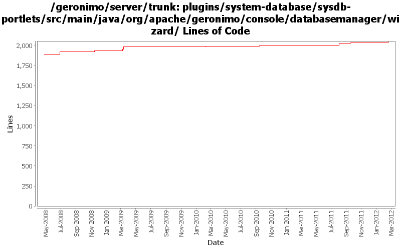

[root]/plugins/system-database/sysdb-portlets/src/main/java/org/apache/geronimo/console/databasemanager/wizard

| Author | Changes | Lines of Code | Lines per Change |
|---|---|---|---|
| Totals | 27 (100.0%) | 245 (100.0%) | 9.0 |
| rwonly | 6 (22.2%) | 64 (26.1%) | 10.6 |
| xuhaihong | 5 (18.5%) | 56 (22.9%) | 11.2 |
| linsun | 3 (11.1%) | 48 (19.6%) | 16.0 |
| gawor | 1 (3.7%) | 26 (10.6%) | 26.0 |
| rickmcguire | 1 (3.7%) | 15 (6.1%) | 15.0 |
| violalu | 2 (7.4%) | 12 (4.9%) | 6.0 |
| xiaming | 1 (3.7%) | 11 (4.5%) | 11.0 |
| genspring | 1 (3.7%) | 9 (3.7%) | 9.0 |
| djencks | 2 (7.4%) | 3 (1.2%) | 1.5 |
| jdillon | 5 (18.5%) | 1 (0.4%) | 0.2 |
GERONIMO-6162 re-enable Datasource Connection Pool Parameters Setting, for 3.0 trunk
11 lines of code changed in 1 file:
GERONIMO-6202 tranql update
3 lines of code changed in 1 file:
GERONIMO-5209 add tranql xa for db2 iseries
9 lines of code changed in 1 file:
GERONIMO-6108 Some labels could not display correctly in admin console's DBWizard page (Thanks Xiao Yi for the patch)
3 lines of code changed in 1 file:
GERONIMO-6102 Convert downloaded jdbc driver to OSGi bundle
50 lines of code changed in 2 files:
GERONIMO-6058 Replace StringBuffer usage with StringBuilder
3 lines of code changed in 1 file:
GERONIMO-5823 Database Pools of Derby Can't Be Created (Thanks Fang Sheng Hao for the patch!)
6 lines of code changed in 1 file:
GERONIMO-5597 Reenable database-related admin console portlets (thanks Fang Sheng Hao for the patch!)
1 lines of code changed in 1 file:
GERONIMO-5597 make system db portlets compile with server
4 lines of code changed in 1 file:
cf OPENEJB-1252 replace file.toURL() with file.toURI().toURL()
1 lines of code changed in 1 file:
GERONIMO-5055 Informix tranql XA 1.2 snapshot leads to weird admin console, patch from Ashish.
9 lines of code changed in 1 file:
fix up of the system-database plugin
15 lines of code changed in 1 file:
GERONIMO-4835 Can not import datasource from JBOSS4
10 lines of code changed in 1 file:
GERONIMO-4749 The resource adapter created via console should be deployed as car(Patch from Rex Wang)
1 lines of code changed in 1 file:
GERONIMO-4767 Use keywords strategy when filter the jdbc driver in database pools (Patch from Rex Wang)
6 lines of code changed in 1 file:
GERONIMO-3883 applied patch from Shawn Jiang to un-confuse the portlet workflow
2 lines of code changed in 1 file:
GERONIMO-4517 Apply unified message display style(G-4484) to javascript alert messages. Together with the localization of these messages. Thanks for the patch, Gang Yin
36 lines of code changed in 1 file:
ensure username and password fields always appear next to each other so that web browsers don't autofill the wrong field. Based on patch from Ivan (GERONIMO-4561)
26 lines of code changed in 1 file:
GERONIMO-4395 EmployeeDatasource and jdbc/EmployeeDatasource create the same files. Slightly modified patch from Ivan Thanks Ivan
16 lines of code changed in 1 file:
GERONIMO-3469 - From console: database pool doesn't work well if the name contains a / like jdbc/EmployeeDataSource
2 lines of code changed in 1 file:
GERONIMO-3503 DBPool wizzard creates plans only for local-transactions - Patch from Manu George - thanks!
30 lines of code changed in 1 file:
More loggers back to static
1 lines of code changed in 1 file:
(GERONIMO-3985) Use SLF4J as the primary logging facade for Geronimo
0 lines of code changed in 4 files: